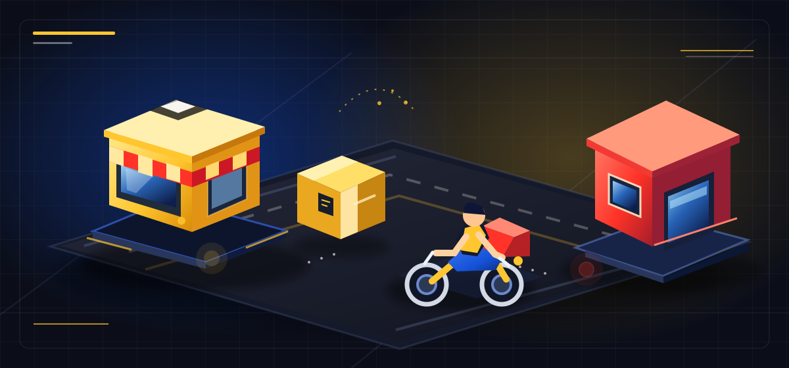

Pedidos y
última milla
Un modelo integrado para solicitudes de clientes, preparación de pedidos en comercios y coordinación de entregas locales.
 DESSET
DESSET
DESSET reúne comercio, tecnología y logística en un ecosistema de servicios orientado a la última milla. Conoce sus soluciones, sus aplicaciones y la forma en que conecta clientes, negocios y entregas.

Un modelo integrado para solicitudes de clientes, preparación de pedidos en comercios y coordinación de entregas locales.
Los servicios se gestionan desde las aplicaciones DESSET. Esta página presenta el modelo y sus canales.
Área complementaria del modelo logístico, distinta del servicio inicial de última milla.
Herramientas y conexiones digitales para la relación entre negocios y clientes.

Explorar opciones y gestionar solicitudes desde la experiencia de clientes.
Reunir la información del pedido y organizar su preparación en el comercio.
Conectar la preparación comercial con la coordinación de una entrega local.

Exploración de negocios, opciones y solicitudes desde la aplicación de clientes.
Organización de solicitudes, preparación y relación con sus clientes.
Coordinación de rutas y movimiento de pedidos dentro del modelo de última milla.
Herramientas de supervisión y trazabilidad en el ecosistema.
Una visión integrada de pedidos, preparación y distribución para negocios. Conoce el funcionamiento de DESSET y sus canales de comunicación.
Conversemos sobre tu comercioUna experiencia de descubrimiento de negocios y gestión de solicitudes desde las aplicaciones DESSET.
Un ecosistema abierto a relaciones con empresas y profesionales de comercio, tecnología y logística.
Plantear una colaboraciónConoce los perfiles de DESSET, su identidad y las novedades del ecosistema. Los canales de la marca reúnen la comunicación institucional.
Sitio institucional: los pedidos y pagos corresponden a las aplicaciones DESSET cuando estén habilitadas. Esta web no procesa transacciones.